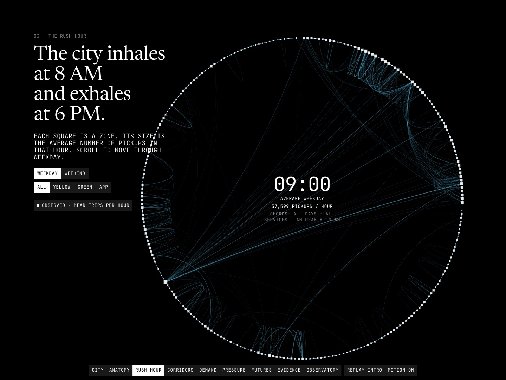

Data story · Python pipeline · deck.gl · 2026-10
Where Does a City of 281 Million For-Hire Trips Actually Concentrate?
A scroll-driven atlas of 280,236,580 cleaned New York for-hire trips from 2024 (yellow, green and high-volume FHV), told as one ring of 263 taxi zones that becomes a map, a congestion indicator, a labeled BPR scenario lab and a plain account of how we know.

Trip data is from the NYC Taxi and Limousine Commission, which states it did not create the data and makes no representation as to its accuracy. Weather is NOAA GHCN-Daily, station USW00094728 (Central Park), applied citywide. Locations are taxi zones, not coordinates, so no route or trajectory is shown. The scenario lab is SIMULATED; the weather result is an association, not a cause. Cells with fewer than 11 trips are suppressed.
01 — The problem
New York publishes every taxi and app-based car trip as a row, and the files are too big and too messy to read directly: 281,300,386 rows for 2024, about a million of them excluded as invalid (negative durations, trips over 80 mph and similar). The practical question is how for-hire demand moves across the 263 taxi zones through the week, and how sensitive the city's pace is to changes in demand.
The constraint that shapes everything: the data holds zone IDs, not coordinates or paths. Any picture of "routes" would be invented, so the site draws zone-to-zone relationships and says so.
02 — What I built
An offline pipeline and a static site joined by a contract.
- Pipeline: checksummed ingestion of 36 trip files, a DuckDB cleaner with six ordered exclusion rules so that raw rows equal kept rows plus exclusions per service-month, zone and aggregate modeling, and a publisher that writes 17 JSON artifacts with a JSON Schema each.
- Analytics: a congestion indicator (median speed against each zone's own overnight free flow), a flow-weighted network, k-means zone clusters, a weather regression with HAC errors, and a BPR scenario model with held-out validation.
- Site: one Canvas 2D ring carried from the opening through the rush hour and corridors, morphing into a deck.gl map, then a scenario lab, an observed-versus-simulated comparison and an evidence chapter.
Every figure on the page carries an honesty tag: OBSERVED, DERIVED, PREDICTED or SIMULATED.
03 — How it was built
- 01
Make the count add up before drawing anything
Each raw row gets exactly one outcome: the first failing rule, otherwise kept. The ledger reconciles to the row: 281,300,386 raw rows, 280,236,580 kept, 1,063,806 excluded (0.38%). Yellow loses 2.33% and green 6.81%, high-volume FHV 0.02%. A test asserts the identity per service-month, and a slower test re-counts the raw Parquet.
- 02
Say what the data cannot show
There are no coordinates after 2016, so there are no routes. Origin-destination pairs are zone to zone. The busiest directed pair is Upper East Side South to Upper East Side North (387,897 trips); including trips that start and end in the same zone, zone 76 within itself leads with 778,346.
- 03
A congestion indicator with a stated proxy
Free flow is the 85th percentile of a zone's overnight hour-of-week median speeds; the indicator is median speed divided by that. At the weekday AM peak, Manhattan runs at 47.6% of its free-flow speed (10.2 of 21.3 mph) and Staten Island at 72.2%. It is a for-hire proxy, not road speed, and the free-flow definition is varied in a robustness table.
- 04
Report the weak clusters as weak
Zones are clustered by the shape of their week. Silhouette is highest at the smallest allowed k: k = 3 scores 0.333, k = 4 scores 0.305. The site reports a coarse three-type typology (stability ARI mean 0.966; random labels score 0.006 or less) rather than forcing more.
- 05
Rain is an association
Daily log trips regressed on precipitation, snow, temperature, day of week, month and holidays with Newey-West errors: each additional 10 mm of rain goes with 2.00% more daily trips (95% CI 1.15% to 2.86%). One station, no event controls, so the page does not claim a mechanism.
- 06
A scenario model that is labeled SIMULATED
A BPR volume-delay curve is fitted per borough to hour-of-week volume and pace. Capacity is fixed to the busiest-5% hourly volume, a normalization rather than engineered capacity, so that alpha is identified. Parameters from January to September are scored on October to December and beat both constant baselines. Fitted beta is near 1 and R-squared is moderate (0.50 to 0.79), so the lab flags anything beyond observed volume as extrapolation.
- 07
Suppress small cells, state the count
Any published count of 1 to 10 trips becomes null. 25,018 trips in OD pairs under 11 annual trips are withheld from the OD totals; headline shares are computed before suppression and the artifact says so.
04 — Results
Data. 280,236,580 kept trips; 85.4% high-volume FHV, 14.3% yellow, 0.2% green; mean 532 trips a minute. 50 of 263 zones account for half of all known-zone pickups. Weekday peaks are 8 AM and 6 PM. At the weekday AM peak Manhattan runs at 47.6% of its free-flow speed (10.2 of 21.3 mph). LaGuardia is the highest-betweenness zone.
Checks. 50 pytest tests (49 without the raw-data re-count), 70 Vitest tests and 242 Playwright tests pass with 0 failed and 0 flaky (QA ran them with one worker); TypeScript and lint are clean. axe-core found 0 violations in 160 scans (10 scenes, normal and reduced motion, at 1440, 1024, 1024 with classic scrollbars and 390 wide). Lighthouse on the live GitHub Pages site, three runs on a busy laptop (1-minute load about 11): mobile performance 0.98 to 0.99, largest contentful paint 1.66 to 2.18 s, layout shift 0, accessibility 1.0, best practices 1.0; desktop performance 1.0 in all three runs, largest contentful paint 0.38 to 0.45 s. Frame pacing (earlier QA pass, laptop, software WebGL): 95th-percentile frame 10.7 ms on desktop and 28.3 ms at 390x844 with the CPU throttled 4x, about 35 fps. That is not a real phone.
Independent QA. A reviewer who did not build the site read contact sheets and ran its own probes over seven passes. The first found 7 major defects; later passes found fewer (a layout-class bug from the wrong viewport width, a footer credit under the fixed navigation at 1280x720, labels colliding with the ring dial) until pass 7 passed with none open.
Known limitations. Scene data is 887 KB gzipped against a 400 KB budget (it loads per scene). At 1024 px wide the closing footer is crossed by a decorative chord. Two timing minors remain: a 13 px title settle at 768 px wide with classic scrollbars, and one frame of stale labels when the congestion metric is switched. The data is for-hire trips only, zone-level (no routes), one year and one weather station.
05 — What I'd do next
- Measure frame pacing on a real phone; the figures here are from a laptop.
- Cut the scene data under its budget by quantizing the hour-of-week grid.
- Add the other months and years, and a second weather station, to test whether the rain association holds.